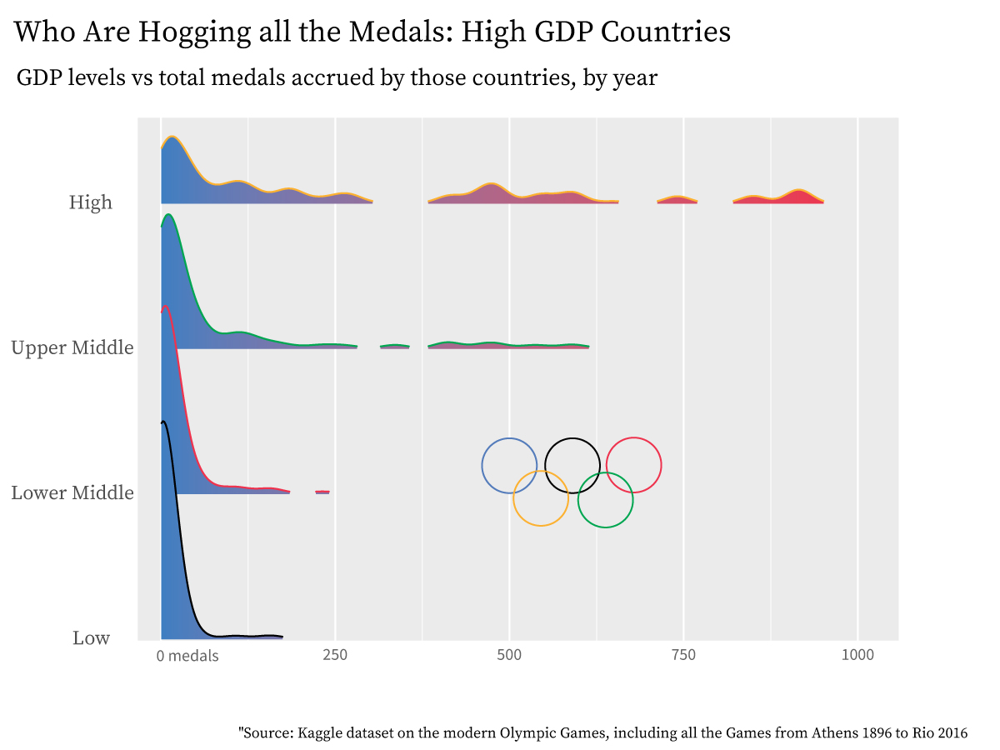

By Lena Kim
Is Olympic success pure athletic talent, or something more?
The 2024 Paris Summer Olympics opens this July. Personally, as an avid Track and Field fan, I'm invested in the showdown between Dutch athlete Femke Bol and USA athlete Sydney Mclaughlin-Levrone in the finals of the women's 400 meters. Although the USA dominates the field of Track and Field, especially the shorter events such as the 400 meters, I couldn't help but think that Bol's Dutch nationality was a rarity in the field. That begged the question: who actually wins these Olympic events?
It's evident that nationality does play a part in determining athletic talent in certain fields, whether that's due to a culture conducive to success in the sport or through better funding for their sports programs. In an internationally celebrated and viewed event such as the Summer Olympics, viewers typically think that whoever wins that gold medal deserves it. They put all their hard work, sweat, and tears, so it would be outrageous to suggest that certain biases- like the athlete's country of origin- are actually at play in determing who wins.
But isn't there certain weight to this claim? Is winning truly based on athletic talent, or something more about where the athletes grew up, what privileges they enjoy as a citizen of their nation, and where they actually won their Olympic medal?
Let's see first: Which countries actually win medals?

From the map above, it is clear that the modern Olympic hegemons take the form of the USA and Russia, with China and Germany close runners-up.
There are some possible explanations as to why. Does it reflect cold war biases, in which the USA and Russia came out as super powers pitted against each other? This suggests that countries' fear of cold war hegemons bleeds into international athletic events, and is also not too plausible because this dataset covers all Olympics from 1896 to 2016, not just after the Cold War years.
Then why have the USA and Russia come out on top? Population may account for it, but a common factor among all four countries- USA, Russia, Germany, and China- are their high Gross Domestic Product output; in the 20th century, USA, Russia, and Germany have traditionally been one of the most Economically powerful countries, and China has emerged as a world leader in terms of economic output into the 21st century.
So let's take a look if, indeed, GDP affects Olympic success- defined here as the amount of medals the country has won:
Higher GDP countries are more likely to have won more medals. This makes sense- a country's higher gross domestic product output is correlated with having more resources to produce those goods, meaning more resources to put into athletic facilities.
Here's a link.